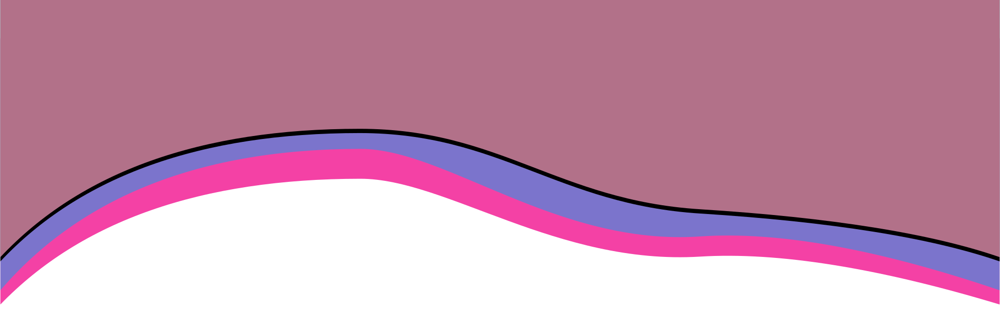
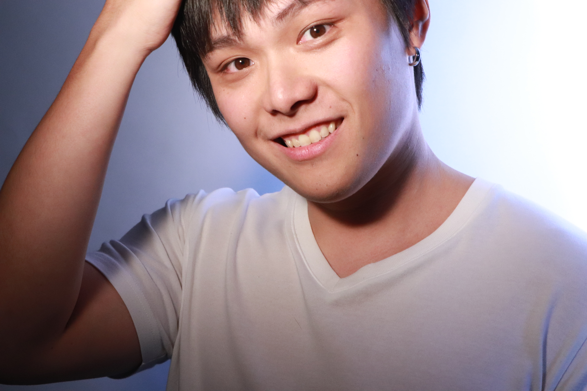

About me
Hello, My name is QueeKao, I am a web designer welcome to my website. I was graduated last years.Initial design that I had learned is drawing design and after a while I was engaged by visual effect or some sepcial illustration like motion graphic or some specific web design.From that moment I gave my time to study web and motion graphic.Also I am pursuing the website that have a lot different visaul impact If you are interesting in my portfolio you can browse it in my porfolio part there is a github and Figma link hopfully we will have a great cooperation.
您好,歡迎來到我的網站,我的名字是高梓棋是個@k網站設計師,我從去年畢業於屏東大學.一開始在大學期間學習了素描之後就會視覺的東西相當喜歡,隨後接觸了插畫設計,後來被MG給吸引開始做一些動畫,在看到了很冬很厲害的網站之後決定要成為網站設計師,主要是想把一些不同的各種視覺效果加到網站中,我也擅長一些簡單色調做出樸素且不失質感的風格,您也可以到porfolio欄位看我的作品,如果您喜歡我的作品想要對我有近一步的了解的話,歡迎您寄信到我的信箱,或用LINE聯繫我.期望我們有個美好的合作旅程.